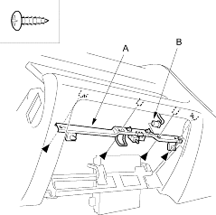
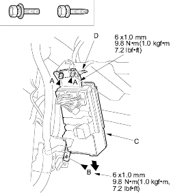
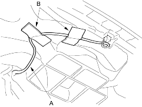

- Remove the dashboard (see page 20-223).
- Remove the these items from the dashboard:
- Instrument panel (see page 20-215)
- Driver's pocket (see page 20-216)
- Gauge assembly (see page 22-93)
- Centre panel, auto A/C (see page 20-219)
- Sunlight sensor, auto A/C (see page 21-152)
- Passenger's airbag (see page 23-167)
- Remove the screws, then remove the glove box striker (A). If equipped, disconnect the glove box light connector (B).
Fastener Locations  : Screw, 4
: Screw, 4

- Loosen the bolts (A) and remove the bolt (B) and pull down the under-dash fuse/relay box (C) to release the bracket (D).
| Fastener Locations | |
| A : Bolt, 2 |
B : Bolt, 1 |

- Remove the sunlight sensor wire harness (A) by removing the cushion tape (B).
